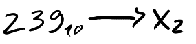
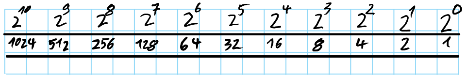
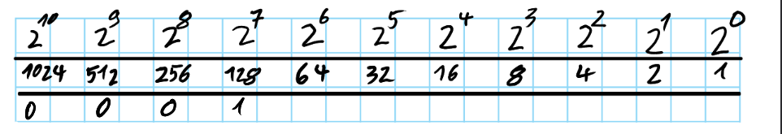
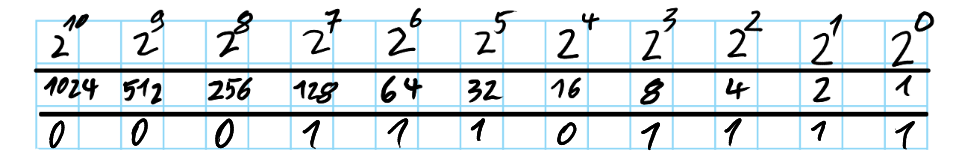
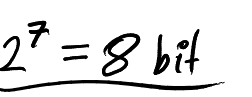
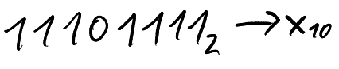
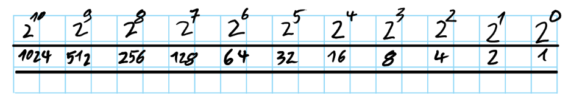
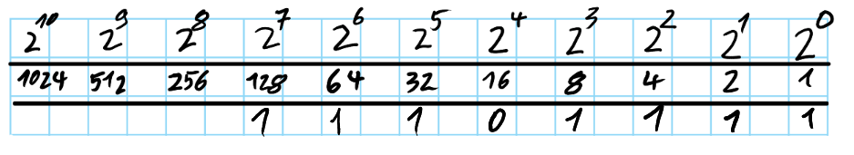

BytesOfProgress
Wiki
How to convert binary / decimal
Converting Decimal to Binary:
First, we need to write down our "Bits" in some sort of table:
Then, we will take a look at what the smallest number in the our table is, where our decimal number can fit in. Our Example is "239". The smallest number on the table where our "239" does fit in is 256. Now we know that 256 is a zero, but 128 is a one.
Now we got 128 out of 239. We got to "build" it out of the numbers on the table which are smaller than 128. 239 - 128 = 111 ===> We need to "build" the difference (111) out of 64, 32, 16, 8, 4, 2, 1.
Hint: 239 is an odd number. If you take a look at the number in the beginning and see if it is an odd or even number, you already know, if it contains a one, or not. For example:
239 = xxxxxxx1
238 = xxxxxxx0
You should get something like this:
239 in decimal equals 11101111 in binary, because 128 + 64 + 32 + 8 + 4 + 2 + 1 = 239.
Some additional notes:
1.We always start counting at zero. That means:
2. The highest representable number with 8 bit is one number less than 9 bit: 255.
Highest representable number with:
8 bit = 255
9 bit = 511
4 bit = 16
Converting Binary to Decimal:
First, we will make our "Bit-Table" again:
Now we will write our binary-number in the table. Important: We start on the right side and write to the left!
We can now add up all the ones:
128 + 64 + 32 + 8 + 4 + 2 + 1 = 239
11101111 in binary equals 239 in decimal.
Congratulations! You are now able to convert binary to decimal and the other way around!
back